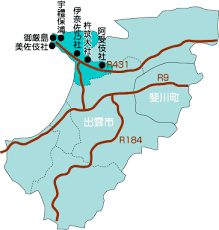
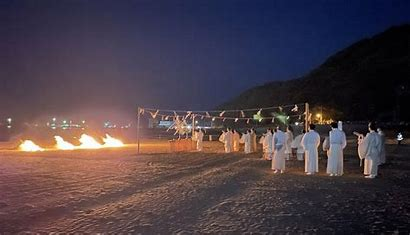

大社地域は、島根半島の最西端に位置する、海に囲まれた自然豊かな街です。
出雲大社の門前町として古くから栄え、神々の国出雲の象徴である出雲大社には多くの観光客が訪れます。また半島先には日御碕神社や東大もあり、断崖絶壁が続くのは大きな見所です。
また、島根ブランドとして評価の高いブドウの一大生産地として知られ、ワイナリーではワインを製造、出荷などで屈指の観光スポットとしてにぎわっています。

神迎まつり（かみむかえまつり）は、全国の八百万の神々が出雲に集う神秘的な祭典です。 毎年旧暦の10月10日（2025年は11月29日）、稲佐の浜で行われます。

夜の稲佐の浜にて、出雲大社の神職たちが「神迎えの神事」を執り行います。 かがり火が焚かれ、祝詞が奏上される中、神々を迎える神秘的な儀式が行われます。
神迎まつりが終わると、神々は「神在祭（かみありさい）」を行うため出雲大社へ向かいます。 他の地域では神様がいなくなる「神無月」ですが、出雲では「神在月（かみありづき）」と呼ばれます。
2025年の神迎まつりは11月29日に開催予定。
神々が集う神秘的な瞬間を、ぜひ体験してください。
神々をお迎えする神迎神事は11月29日19時からです。